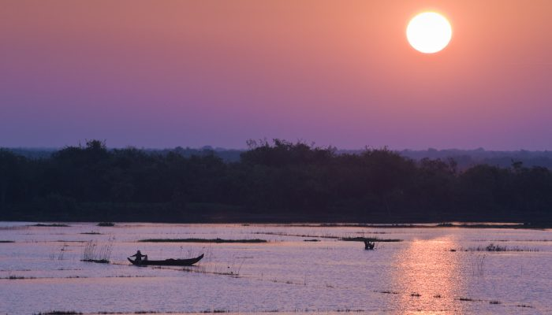
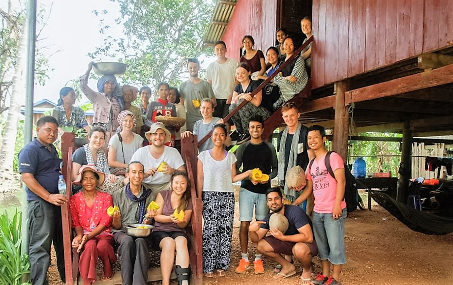

ខេត្តនេះមានអាកាសធាតុខ្យល់រដូវ ដែលមានរដូវរងារចាប់ពីខែ វិច្ឆិកា ទៅដល់ មីនា រដូវក្ដៅចាប់ពីខែ មីនា ទៅដល់ ខែឧសភា និងរដូវវស្សាចាប់ពីខែ ឧសភា ដល់ តុលា។ មានទឹកជំនន់ជានិច្ចជាកាលនៅខេត្តក្រចេះ
ទន្លេមេគង្គអាចមានទឹកហូរកាត់លើសលប់ខ្លាំងស្មើនឹង ៤ ម កំឡុងរដូវវស្សា។

ខេត្តក្រចេះស្ថិតនៅតំបន់ខ្ពង់រាបប៉ែកឦសាននៃ ប្រទេសកម្ពុជា សំបូរទៅដោយសម្បត្តិវប្បធម៌ប្រវត្តិសាស្រ្ត និងធម្មជាតិជាច្រើន
ដែលទាក់ទាញចំណាប់អារម្មណ៍ ភ្ញៀវជាតិ និងអន្តរជាតិអោយមក ទស្សនាកំសាន្ត និងសិក្សាស្រាវជ្រាវ ដើម្បីបាន ឃើញបានយល់ និងបានស្គាល់ពីទិដ្ឋភាពពិតនៃ សម្បតិ្តទាំងនោះដោយខានពុំបាន។ ក្រៅអំពី លទ្ធភាពខាងផែ្នកទេសចរណ៍ខេត្តក្រចេះអាចផ្តល់ លទ្ធភាពលើវិស័យផេ្សងៗទៀតជាច្រើន ដូចជាវិស័យសេដ្ឋកិច្ច សង្គមកិច្ច វប្បធម៌ និងអរិយធម៌ ដែលជាកេរ្តិ៍ដំណែលពីដូនតារបស់ខែ្មរបានបន្សល់ទុកអោយយ៉ាងច្រើនសន្ធឹកសន្ធាប់ដល់កូនចៅជំនាន់ក្រោយផងដែរ។ ក្រចេះក្រុងជាទីប្រជុំជនតូចប៉ុនែ្តស្អាតលំអទៅដោយ
អាគារស្ថាបនាតាំងពីទសវត្ស ១៩៤០-១៩៥០ និង១៩៦០ ដែលមាន រចនាបថល្អប្រណិត។ នៅគ្រប់ទីកនែ្លងក្នុងខេត្តប្រកបដោយ
ធម្មជាតិពិតដ៏សែនមនោរម្យ នៅខាងមុខមានដងទនេ្ល និងកោះនៅខាងក្រោយមានបឹងដ៏ធំ ដែលមានជំនោរបរិសុទ្ធ។
អ្នកដែលបានមកដល់ខេត្តក្រចេះ ជាលើកដំបូងប្រាកដជាមានអារម្មណ៏ សប្បាយរីករាយ នឹងបានគយគន់ទេសភាព ហើយនិងស្រូបខ្យល់រំភើយៗនាពេលរសៀលថៃ្ងរៀបលិច ដ៏ស្រស់ត្រកាល។
អ្នករស់នៅអចិន្ត្រៃយ៍នៅខេត្តក្រចេះភាគច្រើនគឺជាកសិករ រឺ អ្នកនេសាទចិញ្ចឹមពោះ។ ៧៨ % នៃពួកគាត់ជាអ្នកមានការងារក្នុងវិស័យកសិកម្ម។ សាមសិបភាគរយនៃគ្រួសារដែលនៅខេត្តក្រចេះ
រកបានតិចជាង ១ $ ស.រ ក្នុងមួយថ្ងៃ អត្រាភាពក្រីក្ររបស់ខេត្តគឺ ៣២ % យ៉ាងណាក៏វានៅតែទាបជាងមធ្យមភាគជាតិដែលមានកំរិត ៣៩ %។
ការជីករករ៉ែមាសមួយភាគមាននៅក្នុងខេត្តក្រចេះ។ ដីភាគច្រើននៅខេត្តក្រចេះមិនសូវមានជីជាតិទេ ខេត្តនេះកាលពីដំបូងដាំដំណាំ
ឧស្សាហកម្មដែលរស់បានយូរឆ្នាំដូចជាកៅស៊ូ។ ការកាប់ព្រៃឈើខុសច្បាប់បានត្រួតពិនិត្យដោយអ្នករដ្ឋការខេត្តគឺជាបញ្ហាមួយ។
ក្រចេះមានសក្ដានុពលជាគោលដៅបរិស្ថានទេសចរណ៍ (អេកូទេសចរណ៍)។ ប្រព័ន្ធផ្លូវគមនាគមន៍ក្រចេះមានការអភិវឌ្ឍតិចតួច។
កាលពីឆ្នាំ ១៩៩៨ គ្រួសារជាមធ្យមមានផ្ទៃដីកសិកម្ម ០,៤៨ ហិកតា និង ៣៧ % ទៀតគ្មានដីប្រើប្រាស់ឡើយ។
នៅក្នុងខេត្តប៉ៃលិនមានប្រជាជនសរុប 38,215 (2012)នាក់ ដែលមានជនជាតិភាគតិចយួនច្រើនគួរសមក្នុងខេត្តក្រចេះ។ ក្រចេះគឺជាស្រុកកំណើតនៃក្រុមជនជាតិដើមទាំងប្រាំពីរ: ព្នង កួយ មិល
ខោញ ក្រោល ស្ទៀង និង ថ្មូន។ប្រហែល ៧០% អ្នករស់នៅអចិន្ត្រៃយ៍នៃខេត្តនេះរស់នៅតាមបណ្ដោយដងទន្លេមេគង្គ តំបន់ក្រៅពីទន្លេនេះមានការតាំងនៅនៃប្រជាជនរប៉ាត់រប៉ាយ។ប្រហែល ៨% នៃប្រជាជនខេត្តក្រចេះគឺជាអ្នកស្រុកដើម ខេត្តនេះជាខេត្តមួយក្នុង
ចំណោមខេត្តបួនដែលមានអត្រាប្រជាជនដើមច្រើនគួរសមដែរ។
៧០% នៃប្រជាជនទាំងនេះគឺនៅជនបទ។
